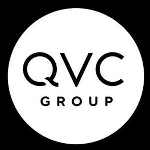

Trade Mark Journal No.2025/009 28 February 2025
UK00004135136 10 December 2024 (35,36)

- Class 35
- Interactive retail store services provided by means of a home shopping service via computer, television, and digital devices in connection with the sale of general consumer merchandise, namely, fashion, namely, clothing, footwear, headgear, cravats, ties, belts and suspenders, gloves, muffs, watches, eyewear, sashes, shawls, scarves, lanyards, socks, stockings, hair ties and fashion accessories, jewellery, beauty, cosmetics and perfumery, cleaning and fragrance preparations, cleaning equipment, pharmaceuticals, food supplements, medical preparations and articles, luggage, credit card cases, business card cases, key cases, coin purses, clutch purses, pouches, belt bags, tote bags, messenger bags, motor vehicle fittings, cooking and dining, namely, cookware, pots and pans, cooking, heating, and cooling equipment, cooking utensils, kitchen containers and bowls, tableware, cutlery, table linens, household textile goods, decorative articles, namely, works of art, decorations, ornaments, sculptures, statues and figurines, household utensils, small household electronic appliances for the kitchen and for entertainment purposes, electric devices for heating, cooking and cleaning, personal hygiene products for the hands, face, mouth, hair, skin, nails, ears, nose, and clothing, computer equipment and peripherals, sporting articles and equipment, leisure, namely, games and playthings, exercise equipment, arts and craft materials, arts and crafts tools and arts and crafts kits, garden requisites, namely, garden hoses, watering cans, flower pots, live plants, trowels, shovels, pruning shears, garden gloves, garden seats, garden furniture, garden statuary, garden lights, string lights, garden lanterns, gardening tools, gardening implements, plants, furniture, toys and playthings, textiles, foodstuffs, telephones, mobile phones, portable and hand operated digital and electronic media and communication devices; providing business management and administration and business strategy development, namely, identifying strategic alliances for others, namely, for subsidiaries and affiliates in the field of interactive retail and mail order sales of general consumer merchandise; promoting the sale of the goods and services of others, namely, for subsidiaries and affiliates.
- Class 36
- Providing financial management in the nature of financial asset management for subsidiaries and affiliate retail companies in the field of interactive retail store and mail order sales of general consumer merchandise.
QVC, Inc.
Representative: Potter Clarkson LLP